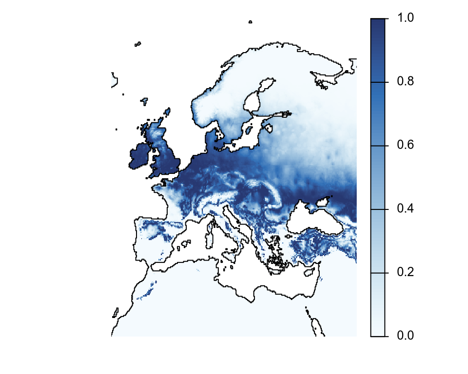
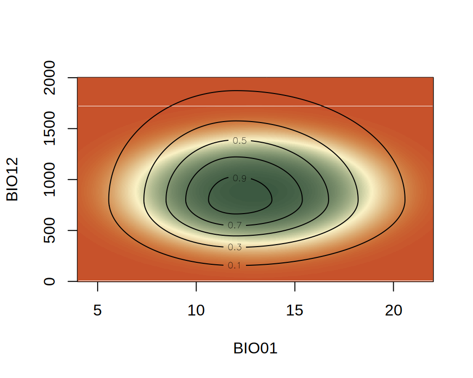
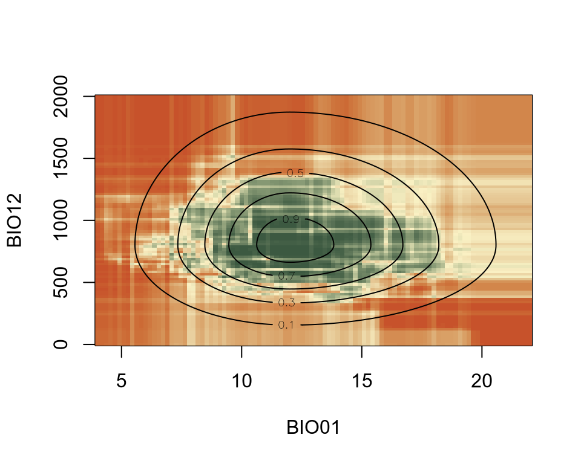

ENM relates one or more environmental variables, e.g. temperature and precipitation, to the suitability of species. The range and shape of how this suitability changes with the variables is called the environmental niche of the species. For example, the figure below shows the thermal niche of a species.
Theory suggests that the niche must be convex, i.e. that the suitability between two points along an environmental gradient must be larger or equal to the value of the points. The curve shown above is an example of a convex niche. The niche is usually also not symmetrical, as biological processes are affected differently by extreme cold and heat. An example of a convex asymmetric niche is shown below.
Species usually respond to more than one environmental covariate, making the niche multidimensional. An example of a non-symmetrical convex 2D niche is shown below.
SDMs project ENMs from an environmental space to a geographical area. Its nuances are mainly in achieving this efficiently using GIS software and highlighting uncertainty of projections due to model extrapolation. For example, projecting the last 2D niche shown in this page onto Europe gives the projected suitability distribution shown below.
Code
library(terra)roi <-ext(-13, 33, 33, 62) # Europer <-rast(c("../data/wc2.1_10m_bio_1.tif", "../data/wc2.1_10m_bio_12.tif")) |># load rasterscrop(roi) # crop to Europew <- r[[1]]w[!is.na(w)] <-1w <-as.polygons(w)vals <-values(r)l1 <-l(vals[, 1], mu[1], sigl[1], sigr[1]) # first component of the nichel2 <-l(vals[, 2], mu[2], sigl[2], sigr[2]) # second component of the nichesdm <- r[[1]]names(sdm) <-""values(sdm) <- l1 * l2 # multiply two componentsplot( sdm,col =hcl.colors(100, "Fall", rev =TRUE),fun = \() lines(w),axes =FALSE,mar =c(2, 0, 1, 0))

Generally speaking, the hard part of ENM/SDM is the ENM. Once the niche of inferred, projecting in geographic space is relatively trivial.
Modeling the niche
Ecological Niche Modeling is a general term that applies to many types of models, all of which try to infer the niche of species. In this course, we will focus on two ENM frameworks, one relying on a generalized linear model (GLM) and one on the Random Forest (RF) algorithm (Breiman 2001). I chose GLM and RF because they represent two extremes of algorithms used in ENM, highlighting their different advantages and limitations. To explain these two procedures, I will use simulated data for a virtual species. The data for this species is stored in virtual.csv.
This dataframe has three columns. BIO01 and BIO12 are the average temperature and precipitation, respectively. occ is the occurrence status, namely if the species has been observed at that environmental conditions (1) or not (0).
GLM
The simples GLM uses a quadratic curve and a binary (binomial) response. The quadratic curve assures the niche is convex, even though it does not allow asymmetric curves. In R, this is achieved using the following specifications.
Code
enm <-glm( occ ~poly(BIO01, 2, raw =TRUE) +poly(BIO12, 2, raw =TRUE),data = d,family =binomial("logit"))
Note
The syntax poly(x, n, raw = TRUE) is used in R to fit a polynomial of degree n to x. raw = TRUE makes sure the actual polynomial of x are used, and not a transformed version of them.
We can the plot this inferred niche on top of the actual niche.
Code
z_inferred <- z# use `x` and `y` generated beforefor (j inseq_along(x)) { z_inferred[j, ] <-predict( enm, newdata =data.frame(BIO01 = x[j], BIO12 = y),type ="response" )}image( x, y, z_inferred,xlab ="BIO01",ylab ="BIO12",col =hcl.colors(100, "Fall", rev =TRUE))contour( x, y, z,add =TRUE,levels =seq(0.1, 1, by =0.2))

The colors now show the inferred niche using glm() and the contours the actual niche. You can see that the actual niche is not symmetrical, but the inferred niche is. This is a common bias of GLM ENM. However, for its simplicity, a GLM ENM performs reasonably well at capturing the optimal environmental value and the general decline of suitability away from it.
Random Forest (RF)
RF is a powerful machine-learning algorithm that has been applied to ENM for several decades. RF has its advantages, but has a major issue: the niche is rarely convex. In fact, in most cases, the niche will be concave (the opposite of convex). In R, RF is achieved using the package randomForest with the following specifications.
This throws a warning that can be silenced by specifying as.factor(occ), which makes randomForest() to consider a classification, rather than a regression, problem. However, we do not want this.
Code
# decrease a bit the resolution to speed it upx <-seq(4, 22, length.out =100)y <-seq(0, 2000, length.out =100)z <-matrix(NA, nrow =length(y), ncol =length(x))z_inferred <-matrix(0, nrow =length(y), ncol =length(x))for (j inseq_along(x)) { z[j, ] <-l(x[j], mu[1], sigl[1], sigr[1]) *l(y, mu[2], sigl[2], sigr[2]) z_inferred[j, ] <-predict( enm, newdata =data.frame(BIO01 = x[j], BIO12 = y),type ="response" )}image( x, y, z_inferred,xlab ="BIO01",ylab ="BIO12",col =hcl.colors(100, "Fall", rev =TRUE))contour( x, y, z,add =TRUE,levels =seq(0.1, 1, by =0.2))

You can see that the niche inferred by RF (colors) is very jagged. This is due to how RF works internally. We will not explain why this happens in this course, but we will highlight this feature of RF and discuss its implications several times. However, you can see that the predictions from the RF model follows, more or less, the shape of the actual niche (contour lines).